| GoSDC Guide | .. |
GoSDC can be installed in a BBC model B, BBC Master, BBC B+ or Electron.
1) Take note of GoSDC's 6-pin configuration header (the one with the red jumper on it), in the following picture :
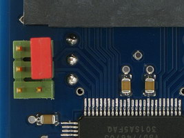
Its pins (in the orientation shown in the picture) are numbered :
| 5 | 6 |
| 3 | 4 |
| 1 | 2 |
So, in this example, there's a red jumper on 4+6 (note that your jumper may be a different colour). There's always a jumper on either 2+4 (disabling GoSDC) or 4+6 (enabling GoSDC). The 'adapter', if installed (see below), connects to 3+5. Nothing should ever be connected to pin 1.
2) Take note of the 'extras' that were supplied with your GoSDC :
3) Now skip ahead to BBC model B installation, BBC Master installation, BBC B+ installation or Electron installation, depending on which machine you have.
1) Establish orientation inside the machine. Looking at the components, with the keyboard facing you, take note of 'north', 'south', 'east' and 'west' (e.g. the power supply is now 'north-west').
2) Take note of the ROM sockets that are available for installation. They are :
| IC number | ROM number |
|---|---|
| 101 | 15 |
| 100 | 14 |
| 88 | 13 |
| 52 | 12 |
They are located below the keyboard, on the 'east' side of the machine. The IC numbers are hard to read, because they're in a small gap between the sockets. So, for your reference, from the 'east' side of the machine, going 'west', they are 101, 100, 88 and 52. The BASIC ROM is usually ROM number 12, but note that you can move it to any other socket, if need be.
3) About the 'socket-to-wire-to-jumper' adapter (henceforth called 'the adapter') that came with your GoSDC. Only with the adapter installed, GoSDC can use the 'free ROM bank on GoSDC' to auto-load patched filing systems (refer to other parts of this manual for details). If you have sideways RAM banks in your machine that GoSDC can use instead, or you're going to have one or more PROMs with a particular patched filing system permanently installed in your machine, installing the adapter is not really necessary.
4) Choose one of the following recommended configuration options :
| Option | GoSDC ROM | Adapter ROM | Comment |
|---|---|---|---|
| A | 14 | - | Free ROM bank unusable |
| B | 14 | 15 | GoSDC can control 15 |
| C | 14 | 12 | GoSDC can't control 15 |
There are other options, but these will either short the adapter wire against the GoSDC PCB, or weaken GoSDC's control over other ROM sockets (the higher the ROM number of GoSDC, the more control it has). Note that GoSDC will not fit in IC101, because it's a little too wide.
Note that, if the 'adapter' is used, it doesn't matter which socket contains GoSDC or the adapter. Hardware trickery will ensure that GoSDC always occupies the highest ROM number of the two. I.e., whichever two sockets you choose, you may always swap GoSDC and the adapter. The end result will be the same.
You should now have something resembling this picture :
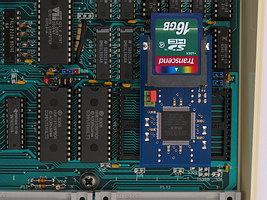
Ready.
You should now have something resembling this picture :
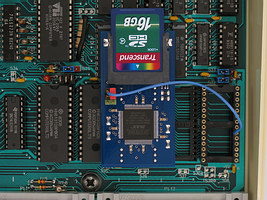
Note and check the correct orientation of the adapter socket.
Ready.
1) Establish orientation inside the machine. Looking at the components, with the keyboard facing you, take note of 'north', 'south', 'east' and 'west' (e.g. the power supply is now 'north-west').
2) Take note of the ROM sockets that are available for installation. They are :
| IC number | ROM number |
|---|---|
| 37 | 6+7 |
| 27 | 8 |
| 41 | 4+5 |
They are located just 'south' of the MOS ROM (IC24), on the 'east' side of the machine. The IC numbers are hard to read, because they're in a small gap between the sockets. So, for your reference, from the MOS ROM, going 'south', they are 37, 27 and 41.
3) About the plain IC socket (henceforth called 'the extra socket') that came with your GoSDC. You must mount this 'between' GoSDC and the sideways ROM socket in the Master, to gain extra height (else the underside of the GoSDC PCB will short against links LK19, LK18 or LK12 on the Master motherboard).
4) Choose one of the following recommended configuration options :
| Option | GoSDC ROM | Comment |
|---|---|---|
| A | 6+7 | You lose sideways RAM banks 6 and 7 |
| B | 8 | You lose the free ROM bank on GoSDC |
There are other options, but these are physically impossible (for example, GoSDC as ROM number 4+5).
In both cases you should now have something resembling this picture :
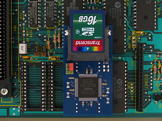
Ready.
1) Note that you need the 'UNI' version of GoSDC, and must run the 'UNI' version of the GoSDC software. The 'MBE' GoSDC and software will not work on a B+, because its ROM sockets are electronically different.
2) Establish orientation inside the machine. Looking at the components, with the keyboard facing you, take note of 'north', 'south', 'east' and 'west' (e.g. the power supply is now 'north-west').
3) Take note of the ROM sockets that are available for installation. They are :
| IC number | ROM number | 32/16K link |
|---|---|---|
| 62 | 8+9 | LK15 |
| 68 | 10+11 | LK18 |
| 35 | 2+3 | LK9 |
| 44 | 4+5 | LK11 |
| 57 | 6+7 | LK12 |
Both the sockets and their links are located near the power supply. The IC numbers should be sufficiently readable. Leave IC71 well alone, it contains the MOS + BASIC ROM.
4) Choose any one of the ROM sockets for installation. The socket for ROM numbers 10+11 is preferred, since it maximizes GoSDC's control over other ROMs.
Then :
You should now have something resembling this picture :
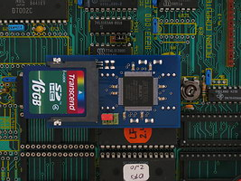
Ready.
1) Note that you need the 'GoSDC to Electron' interface (old or new version) or the 'GoSDC to cartridge' interface (henceforth called 'the interface') to connect GoSDC to your Electron.
Look at the pictures below to determine which interface you have, and continue reading there.
2) Establish orientation on the interface. Looking at the side where the components are, with the Electron expansion port connector facing you, take note of 'north', 'south', 'east' and 'west' (e.g. said connector is now 'south').
3) Note that the interface has two free IC sockets. The 32-pin (west) one is the 'utility' socket. The 28-pin (east) one is where you will install GoSDC.
4) Note the jumper just 'east' of the 28-pin socket. It is the ROM/SRAM jumper. See below.
Then :
I.e. first you had something like this :
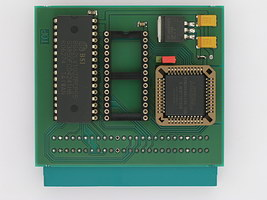
and after installing GoSDC, you have something like this :
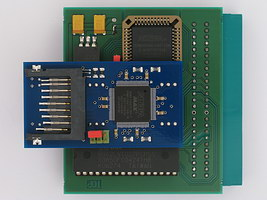
The utility socket on the interface may remain empty. But it is meant to take a ROM or SRAM chip, providing up to 2 (for 28-pin chips) or 8 (for 32-pin chips) sideways ROM (if ROM) or RAM (if SRAM) banks. The chip must be suitable, e.g. it must have a standard JEDEC pinout, like a 27C1001 or 628128. If you put in a ROM, the ROM/SRAM jumper must be set 'west', else 'east'. If you put in a 28-pin chip, it must be 'lined up' to the south side of the 32-pin socket (i.e. the northmost 4 holes, 2 on each side, remain unoccupied). Before you actually put anything in the utility socket, refer to 'Sideways ROM/RAM'.
Now simply plug this 'combo' into your Electron's expansion port, at the back of the machine.
Ready.
2) Establish orientation on the interface. Looking at the side where the components are, with the Electron expansion port connector facing you, take note of 'north', 'south', 'east' and 'west' (e.g. said connector is now 'south').
3) Note that the interface has one free IC socket. It is the one where you will install GoSDC.
Then :
I.e. first you had something like this :
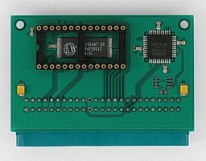
and after installing GoSDC, you have something like this :
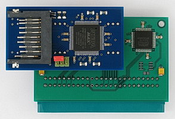
The interface always has 128 KB of SRAM on board, providing 8 sideways RAM banks. Refer to 'Sideways ROM/RAM' for the ROM numbers you can use.
Now simply plug this 'combo' into your Electron's expansion port, at the back of the machine.
Ready.
2) Establish orientation on the interface. Looking at the side where the components are, with the cartridge connector facing you, take note of 'north', 'south', 'east' and 'west' (e.g. said connector is now 'south').
3) Note that the interface has two free IC sockets. The northmost one is where you will install GoSDC. The southmost one can be used to add sideways RAM.
4) Note the jumpers just 'west' of the two sockets. They are the ROM number jumpers. See below.
Then :
I.e. first you had something like this :
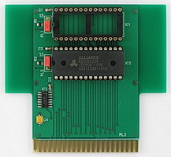
and after installing GoSDC, you have something like this :
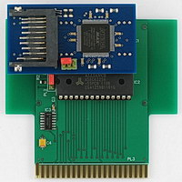
The southmost socket on the interface may remain empty. But it is meant to take a 32 KB SRAM chip, providing up to 2 sideways RAM banks. The chip must be suitable, e.g. it must have a standard JEDEC pinout, like a 62256. The ROM number jumper of each socket can be used to map that socket to ROM number 13 (jumper on side marked '13'), 0+1 or 2+3 (jumper on other side, which pair depends on the cartridge slot used), or none (no jumper). Note that if you choose '13', you cannot use the free ROM bank on GoSDC (northmost socket) or the second sideways RAM bank (southmost socket).
Now simply plug this 'combo' into an Acorn Plus 1 (or compatible) cartridge slot (with its components facing the back of the machine, not the front !).
Ready.